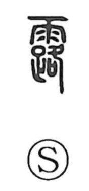

露

Uncategorized
Kun: tsuyu, arawa, arawareru, arawasu | On: ro
dew ・ to reveal ・ to appear ・ to expose ・ to moisten
Explanation
A phono-semantic character: the rain radical 雨 conveys “heavenly moisture,” while 路 serves as the phonetic, giving the sound ro. An early lexicon explains it as liquid that oozes down from heaven and moistens all things—a gentle, life-nurturing moisture. From this core sense it denotes dew itself and, by extension, the act of wetting or soaking. The idea of moisture coming forth also broadens to what comes into view or is laid bare, yielding meanings such as appear, show, and expose, as seen in compounds like 露見/露顕 and 露呈.